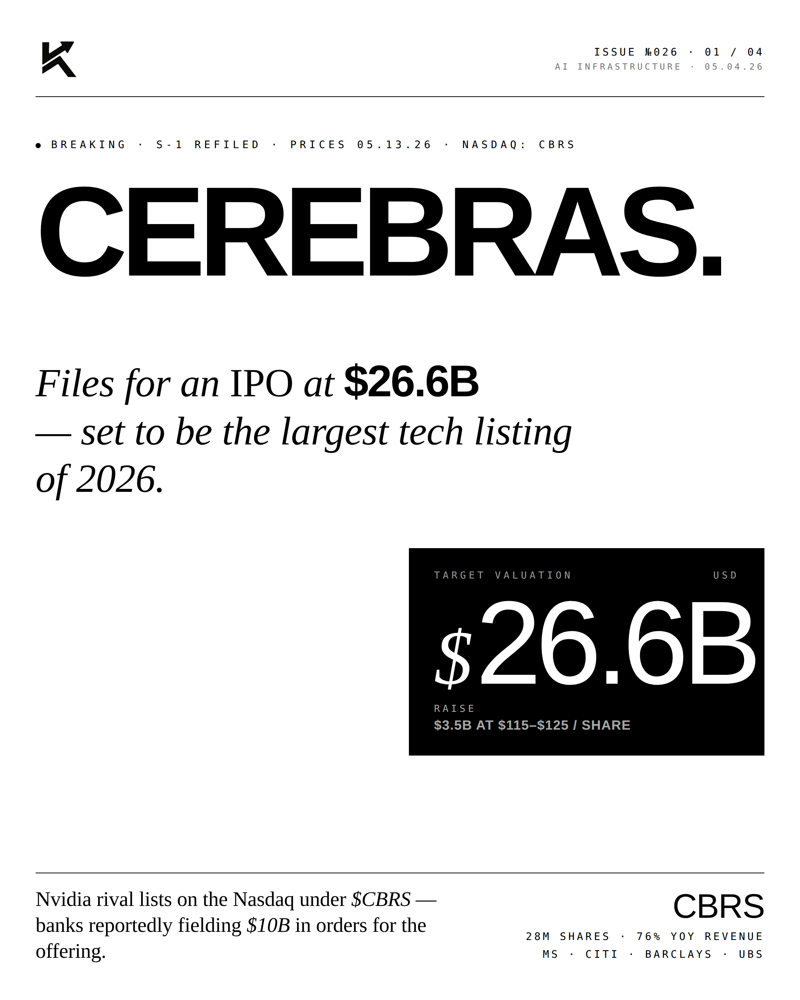
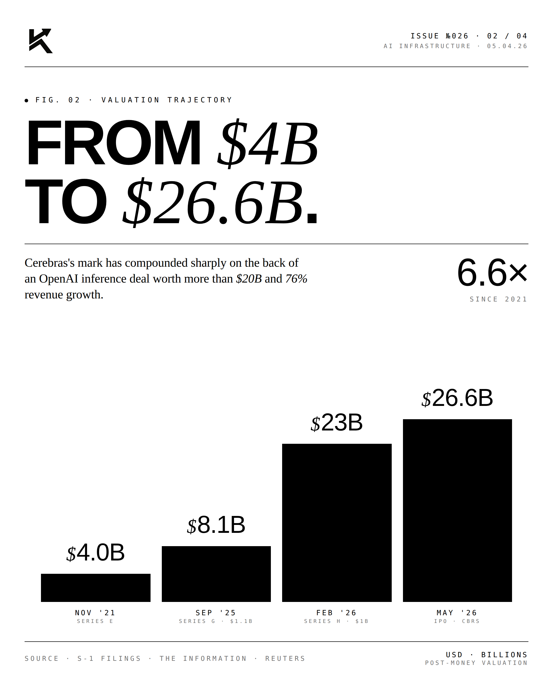
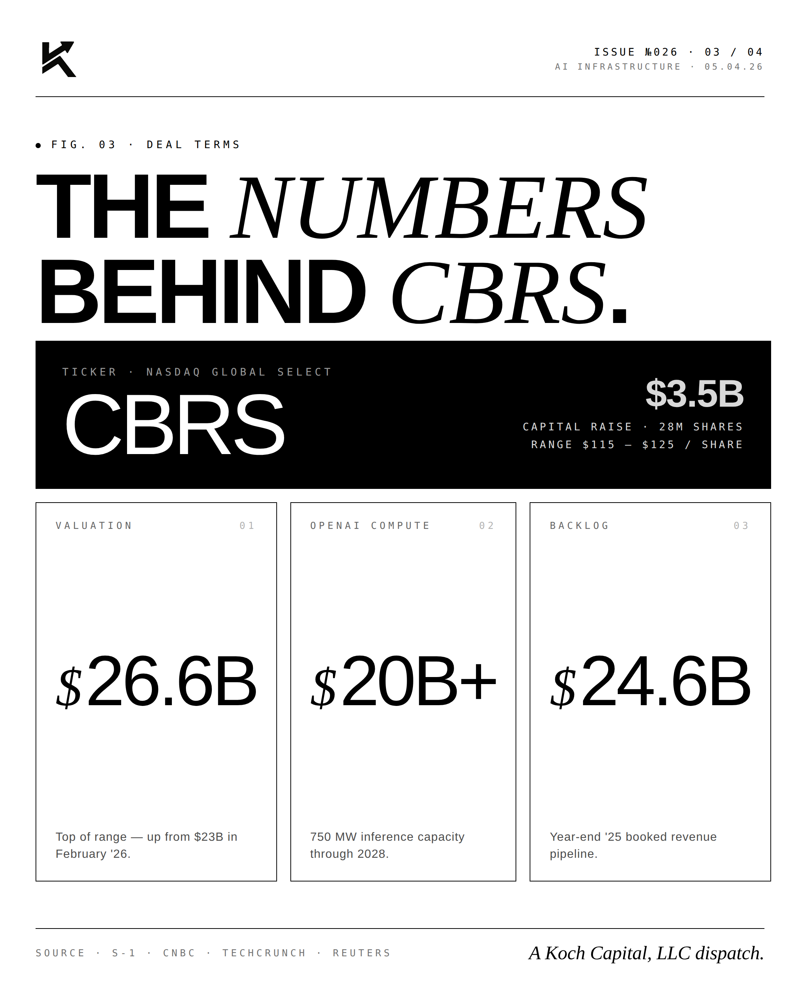
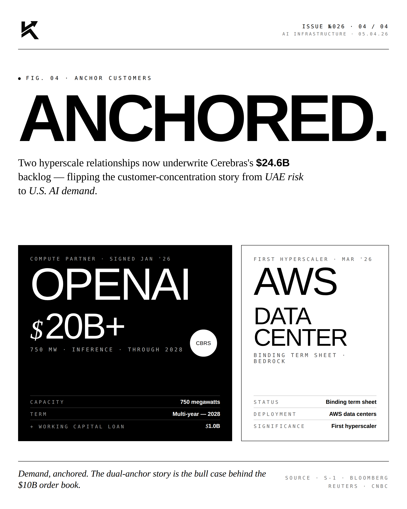

Cerebras.
The AI compute story everyone forgot just filed. Cerebras — the wafer-scale chipmaker — is going public. Anchor orders already covering the float.

The Trajectory.
Cerebras has been quietly building the largest computer chips ever made — wafer-scale processors that pack hundreds of thousands of cores onto a single piece of silicon. Where NVIDIA stitches together GPUs in racks of 8 or 16, Cerebras puts the equivalent of an entire AI data center on one chip. The pitch has always been compelling. The trajectory to public markets has been less so — until now.

The Terms.
The filing comes with structural details that signal serious institutional appetite: anchor orders covering the bulk of the offering before the roadshow even formally begins. This is the playbook for a high-conviction IPO where management wants pricing leverage going into book-building.
"One chip,
one data center."ANDREW FELDMANFounder & CEO · Cerebras Systems
"Cerebras was built on a single bet — that you could put an entire AI supercomputer on a single piece of silicon. That bet is now the company's commercial reality."


The compute story has its second public chapter. NVIDIA is the orchestrator. Cerebras is the contrarian.
Disclosure
The author is a Limited Partner in 1789 Capital, which holds a position in Cerebras. Personal commentary and editorial analysis. Not investment advice, not an offer or solicitation.